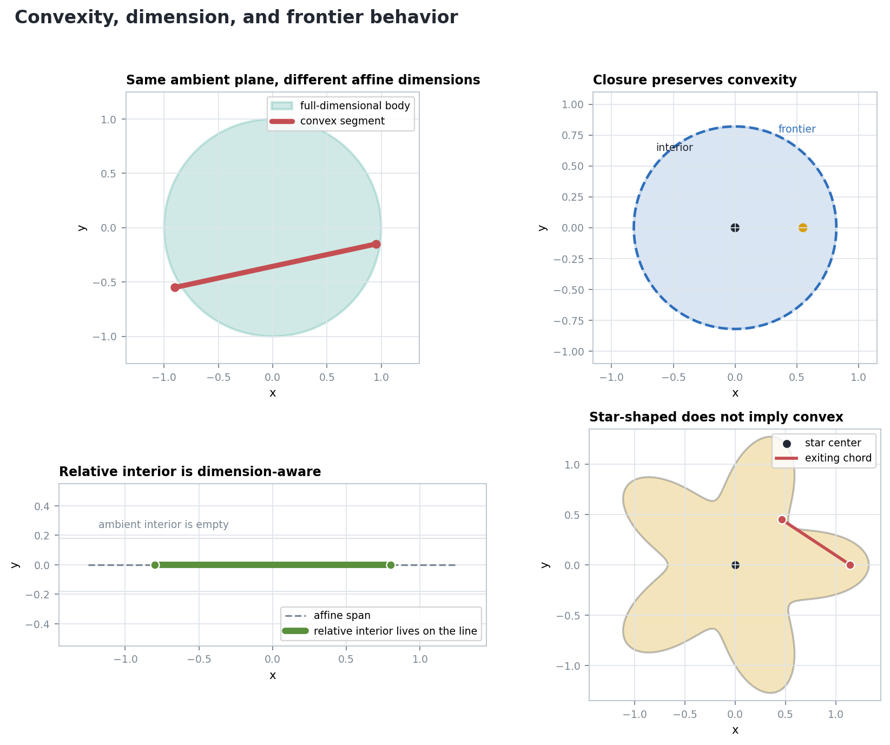
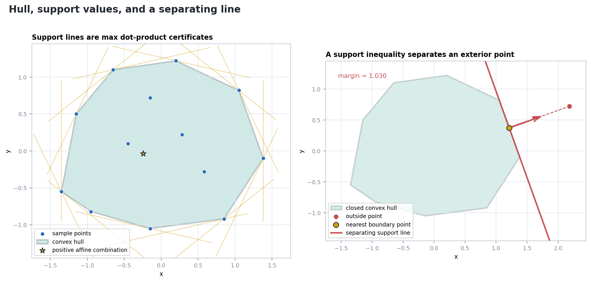
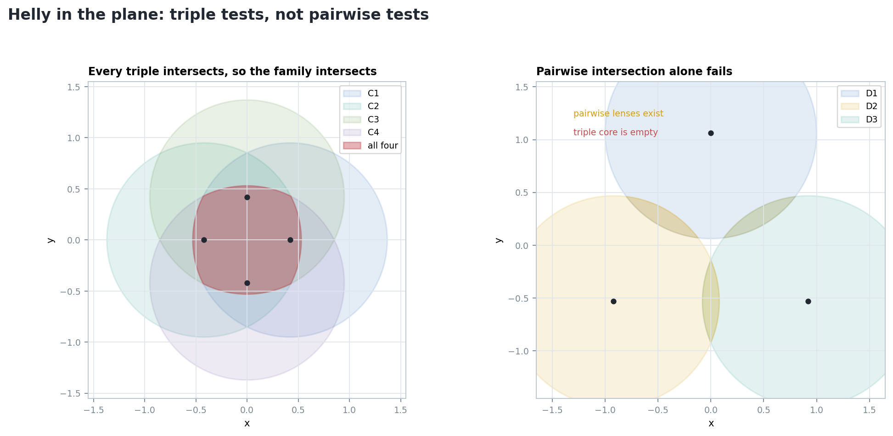
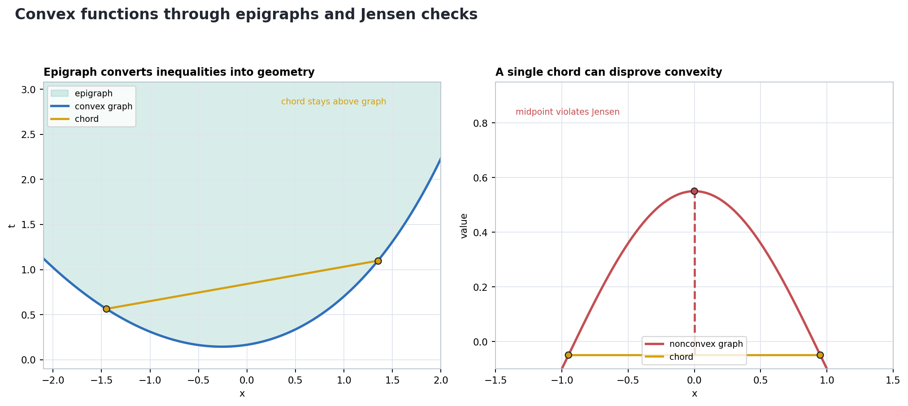

Convex Sets
From one segment test to a toolkit of affine combinations, support inequalities, separation witnesses, finite intersection tests, and epigraph geometry.
Convexity Begins With Every Segment
A subset \(K\) of a real affine space is convex when
\(x,y\in K,\ 0\le t\le 1 \quad\Longrightarrow\quad t x+(1-t)y\in K.\)
The quantifier is the point: one escaping chord disproves convexity.
Convex hulls use weights
\(\lambda_i\ge 0,\quad \sum_i \lambda_i=1,\quad x=\sum_i \lambda_i p_i.\)
This is the algebraic form of repeatedly taking segments.
Topology Refines the Segment Test

A segment in the plane has empty ambient interior, but nonempty relative interior in its own affine span.
Limits of points on chords remain limits of points in the set, so the segment condition survives closure.
A star-shaped set may see every point from one center, while a chord between two other points leaves the set.
A Convex Hull Is a Positive-Weight Promise
For a finite set \(P=\{p_1,\ldots,p_m\}\),
\(\operatorname{conv}(P)=\left\{\sum_i \lambda_i p_i:\lambda_i\ge0,\ \sum_i\lambda_i=1\right\}.\)
For direction \(u\), the support value records the tightest halfspace normal to \(u\):
\(h_K(u)=\sup_{x\in K} u\cdot x.\)

Outside Means Violating a Linear Inequality
For a closed convex set \(K\) and \(p\notin K\), find \(u\) such that
\(u\cdot x \le h_K(u) \quad \text{for all } x\in K,\)
\(u\cdot p > h_K(u).\)
- Choose a closest boundary point \(q\) when compactness or local existence applies.
- Use the normal \(u=p-q\).
- Convexity forces the whole body to one side of the perpendicular support line.
Support Lines Expose Faces, Not Always Points
A point \(v\in K\) is extreme when
\(v=t x+(1-t)y,\ 0
In a polygon, vertices are extreme points. A support line may touch one vertex or an entire edge, giving an exposed face.
Every extreme point lies on the frontier for a full-dimensional compact body, but most boundary points on a smooth arc are not polygon vertices.
Intersections of Halfspaces Stay Convex
If \(H_i=\{x:a_i\cdot x\le b_i\}\), then
\(P=\bigcap_i H_i\)
is convex because every inequality is preserved under convex combinations.
- Take \(x,y\in P\).
- For each row \(i\), \(a_i\cdot x\le b_i\) and \(a_i\cdot y\le b_i\).
- Linearity gives \(a_i\cdot(tx+(1-t)y)\le b_i\).
Convexity Is Stable Under the Right Operations
A point on a segment lies in every set separately, so it lies in the common part.
\(\bigcap_\alpha K_\alpha\)
Affine maps preserve weighted averages, so convex combinations map to convex combinations.
\(A(tx+(1-t)y)+b\)
Approximate endpoints by points in the set, take their segment points, and pass to the limit.
\(\overline{K}\)
| Operation | What To Track | Typical Failure If Hypotheses Change |
|---|---|---|
| Relative interior | Affine span, not just ambient space | A lower-dimensional set looks empty in the wrong topology |
| Support and separation | Closedness or compactness for attained boundary points | A limiting support value may not be reached |
| Finite intersections | Dimension of the ambient affine space | Pairwise overlap is too weak in the plane |
Helly Compresses Many Intersections Into Small Ones

For a finite family of convex sets in \(\mathbb{R}^d\), if every \(d+1\) members intersect, then the whole family intersects.
In \(\mathbb{R}^2\), triple intersections are the right local tests. Pairwise intersections do not control the whole family.
The number \(d+1\) is not decorative: it is the affine size of a simplex that can witness a missing common point.
When Pairwise Overlap Becomes a Triple Core
For three equal disks centered at an equilateral triangle, pairwise lenses appear before the common triple intersection.
| Radius Sample | Pairwise? | Triple Core? |
|---|---|---|
| 0.97 | yes | no |
| 1.03 | yes | no |
| 1.09 | yes | yes |
Epigraphs Convert Inequalities Into Geometry

For \(f:C\to\mathbb{R}\),
\(\operatorname{epi}(f)=\{(x,t):x\in C,\ t\ge f(x)\}.\)
A function is convex exactly when its epigraph is a convex subset of one higher-dimensional affine space.
In one variable, every chord between two graph points must stay above the graph.
One Bad Midpoint Is Enough To Disprove Convexity
For \(0\le t\le 1\), convexity of \(f\) gives
\(f(tx+(1-t)y)\le t f(x)+(1-t)f(y).\)
For twice differentiable one-variable examples, \(f''(x)\ge0\) on the interval is a symbolic certificate of convexity.
Many successful Jensen samples are informative, but a proof must control all pairs and all weights.
Five Certificates To Carry Forward
| Question | Certificate |
|---|---|
| Is the set convex? | Every segment stays inside |
| Is the point in a hull? | Nonnegative weights summing to one |
| Is a point outside? | A violated support inequality |
| Does a family intersect? | Dimension-sized subfamily tests |
| Is a function convex? | A convex epigraph or Jensen inequality |
Given a closed convex polygon \(K\) and a point \(p\), either express \(p\) as a positive affine combination of vertices or draw a support inequality separating \(p\) from \(K\).
Do not merely assert that a picture is convex. Name the certificate that a proof, computation, or counterexample would have to provide.